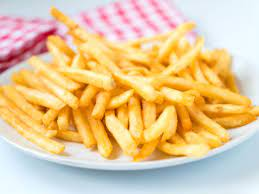

Inicio:
Sobre Nosotros:
Recetas:
Contacto:
Papas Fritas
Receta de papas fritas caseras

Ingredientes
3 o 4 papas (300 gr)
Aceite
sal
Elaboración (Pasos)
Pelar las papas
Cortarlas en forma de Baston
Calentar aceite en una sarten
Cocinar hasta que esten doradas
Removerlas del aceite y salar a gusto